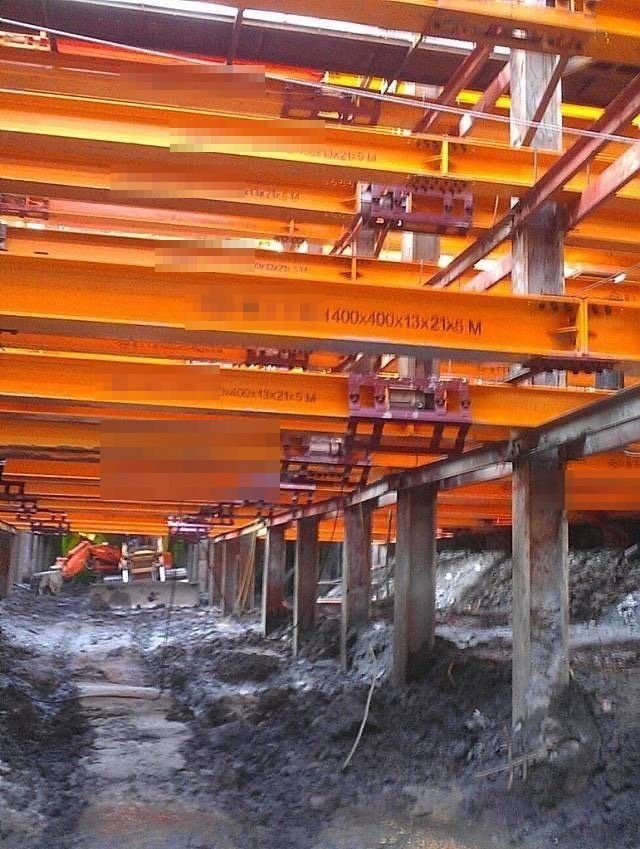
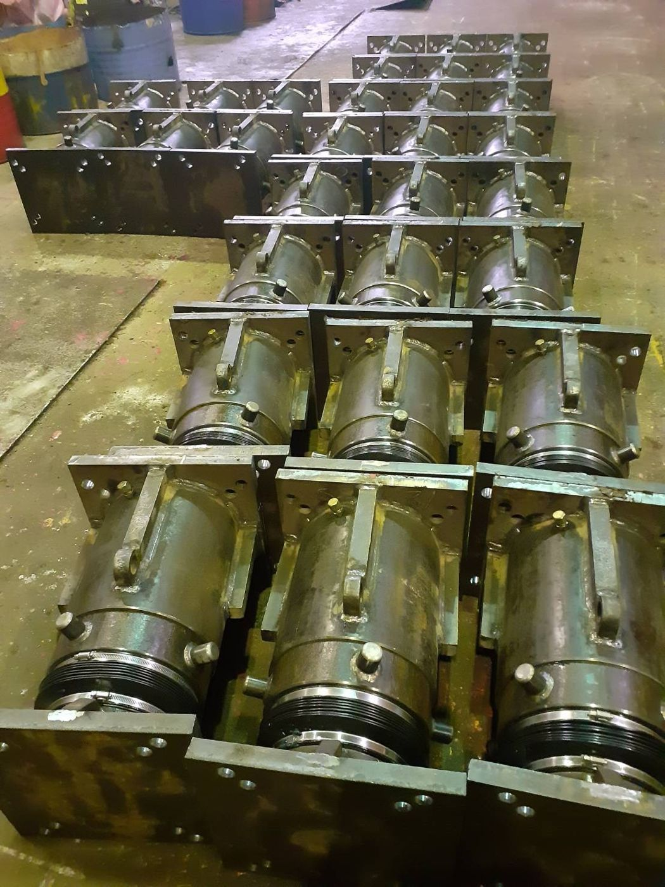
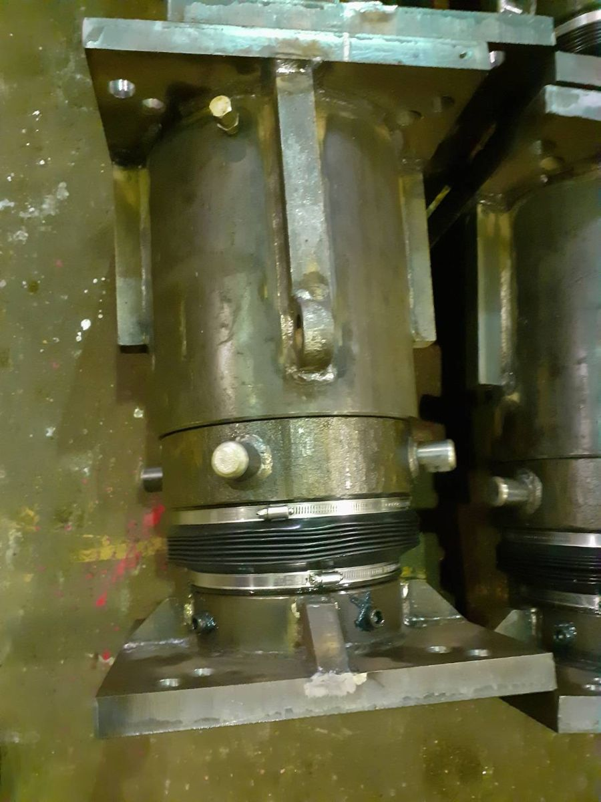
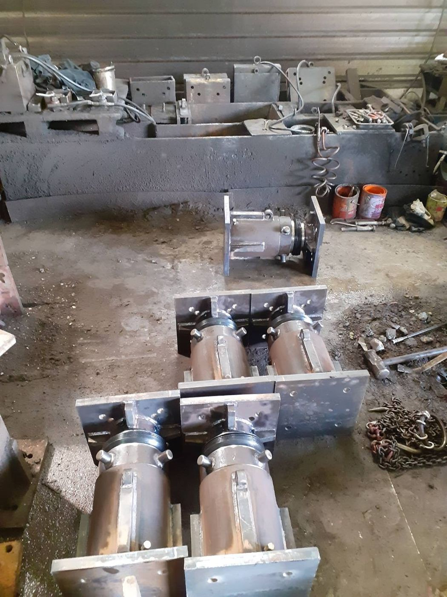
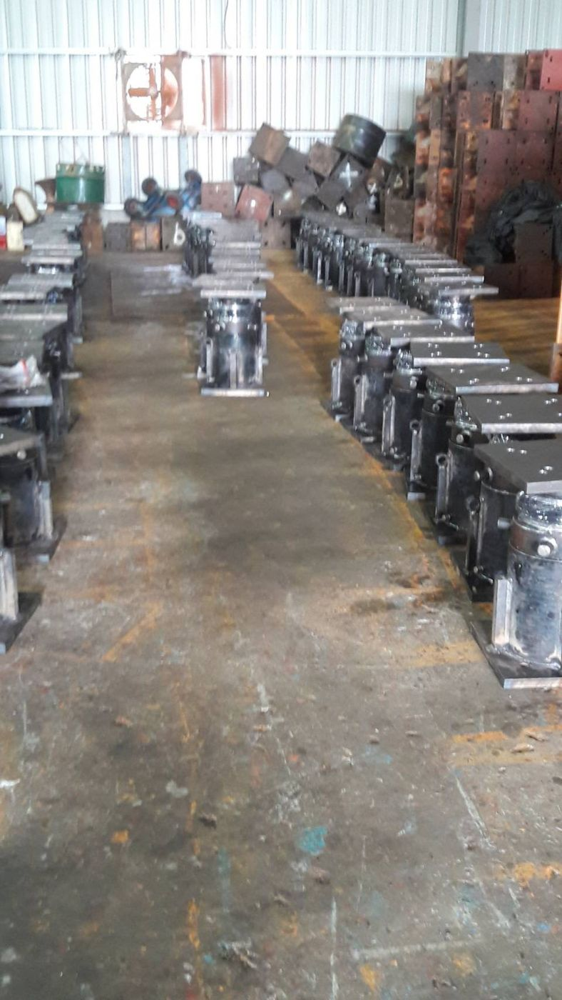

分流器
一台主機同時帶動多支千斤頂，自行製造。
100–400 噸 自有工廠製造・維修・出租

千斤頂由秋星工廠自行製造，從油壓缸加工、組裝到出廠檢查一手包辦，品質自己把關，維修零件也能即時供應。




100–400 噸 規格、報價、出租請來電
撥打 (03) 359-4933一台主機同時帶動多支千斤頂，自行製造。
壓力錶附保護錶箱，顯示千斤頂噸數。
提供千斤頂油壓動力。

施工架樓梯踏板，以扣件固定於鋼管。
另有 PGB 軸力計，歡迎來電洽詢。